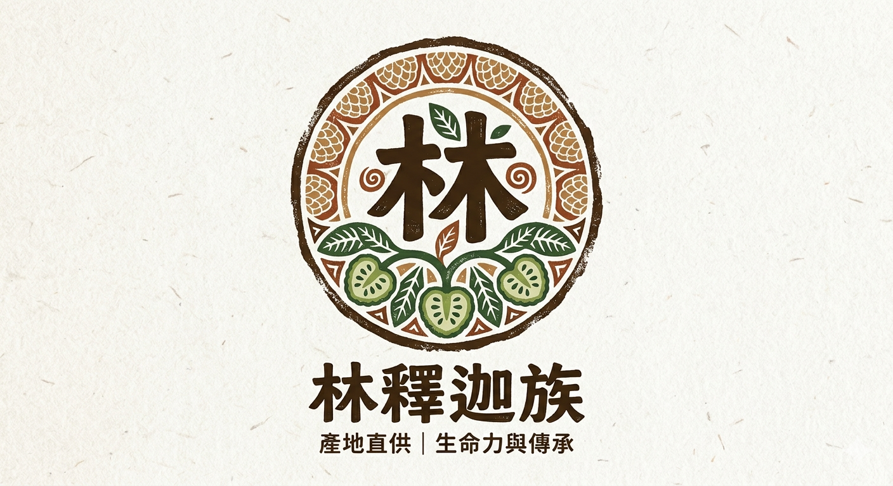

產地直供
從產地採收、分級與包裝，減少中間等待，讓香氣與熟度更穩定。

林釋迦族 產地直供｜生命力與傳承Why Lin Sugar Apple?
從產地採收、分級與包裝，減少中間等待，讓香氣與熟度更穩定。
依採收期、外觀、重量與成熟度挑選，適合自用也適合正式送禮。
直接進入訂購平台選品項，流程清楚，訂單資訊更容易確認。
不確定數量、配送或送禮搭配時，可加入好友由客服協助確認。
About Lin Sugar Apple
我們是來自台東的釋迦職人。兩代人、數十年的歲月裡，我們家族只專注做好一件事：把台東陽光與黑土滋養出的飽滿釋迦，完好地送到您的手中。
對我們而言，釋迦不只是一門生意，而是兩代人對土地的承諾，也是生命力的延續。
父親用粗糙的手掌開墾台東這片土地，面對颱風、烈日與收成風險，依然一步一步把釋迦園照顧起來。釋迦樹在風雨中展現出的頑強生命力，也成為我們家族最重要的精神。
我們接下父親長滿繭的雙手交託的棒子。傳承的不只是多年累積的種植經驗與老道眼光，更是那份「自己敢吃，才敢賣給客人」的誠實初心。
我們不是到處收購、轉手賺差價的水果批發商；我們是頂著台東烈日、流著汗水，親手照顧每一顆釋迦的生產者。
Products
Sugar Apple Guide
每一款釋迦都有自己的個性。想吃傳統綿密、清爽 Q 彈、稀有老饕款，或是體面送禮的大果禮盒，都可以先從這裡快速比較。
傳統綿密、濃郁爆甜，熟透後像天然台式冰淇淋。
果肉紮實 Q 彈，甜中帶微酸，切盤漂亮又耐吃。
介於大目與鳳梨釋迦之間，軟中帶 Q，甜中帶微酸。
果大肉厚、酸甜 Q 彈，視覺大器，適合高級禮盒。
又稱傳統釋迦、番荔枝，是台灣最具代表性的釋迦品種之一。外觀有明顯突出的鱗目，成熟後可用手輕鬆剝開，果香濃郁、甜度高，是許多人記憶中最經典的釋迦滋味。
熟透後果肉綿密柔軟，像天然果醬或台式冰淇淋。平均甜度可達 20 至 25 度，甜味直接濃郁，帶有獨特熱帶果香。
適合喜歡甜味水果的人，也適合長輩、小孩或牙口不佳者。若有控糖、減重或血糖管理需求，建議適量食用。
偏硬時放室內陰涼通風處等待熟化，變軟前不要冷藏。熟透後可直接剝開享用，也可挖出果肉冷凍成天然釋迦冰淇淋。
鳳梨釋迦不是釋迦加鳳梨，而是由傳統釋迦與外國品種配種而來。成熟時帶有淡淡鳳梨般的酸甜香氣，口感清爽、有層次，也很適合送禮。
果肉紮實、有嚼勁，像果凍或水果軟糖般 Q 彈。甜度常可達 20 度以上，帶天然果酸，甜而不膩。
適合怕太甜、喜歡酸甜平衡的人，也適合宴客、節慶禮盒與切盤擺盤。
偏硬時常溫催熟，變軟前不要放冰箱。成熟後建議用刀切片或切塊，吃不完可冷藏 2 至 3 天，或切塊冷凍成果肉雪酪。
蘋果釋迦不是釋迦接枝蘋果，而是鳳梨釋迦培育出的後代系譜。產量較少、市場能見度較低，是喜歡嚐鮮的水果老饕很值得把握的特色品種。
口感介於大目釋迦與鳳梨釋迦之間，比大目多一點 Q 勁，又比鳳梨釋迦更溫潤柔軟。甜度約 20 度，甜中帶微酸。
適合喜歡酸甜平衡、多層次風味的人，也推薦給想同時享受柔軟與 Q 彈口感的客人。
偏硬時常溫催熟，成熟時外皮不一定裂開，可用手掌輕握判斷彈性。成熟後用刀切片、切塊，冷凍後像天然水果雪糕。
綠鑽釋迦又稱綠鑽石釋迦，承襲鳳梨釋迦的 Q 彈酸甜，也改善了果實大小與果肉厚度。外觀翠綠、果形碩大，適合作為高級水果禮盒主角。
果大、肉厚、果肉率高，口感比鳳梨釋迦更厚實飽滿。甜度常可達 20 至 22 度，帶有鳳梨與百香果般的熱帶香氣。
適合喜歡大顆、厚實、Q 彈口感的人，也適合商務送禮、節慶拜拜或全家分食。
因果肉厚，熟化需要多一點耐心。偏硬時常溫催熟，變軟後用刀對半切開再切塊，吃不完可冷藏或冷凍成熱帶水果雪糕。
四款釋迦都屬於高甜度水果，若有控糖、減重或血糖管理需求，建議適量食用。偏硬的釋迦請先常溫後熟，變軟前不要急著放冰箱。
Order Flow
點選訂購平台，查看目前可供應的釋迦與水果品項。
填寫品項、數量、收件資訊與配送需求，讓訂單資訊完整留存。
依採收與包裝安排出貨，把新鮮果香送到指定地點。